Processing Report
Features' Consistency:
Qualitative features removed:
encounter_id removed because has more than 10 categories
Top 5 categories
| encounter_id |
relative_frecuency |
| 173015040 |
0.000013 |
| 15840348 |
0.000026 |
| 146727732 |
0.000039 |
| 292167198 |
0.000052 |
| 2356308 |
0.000066 |
patient_nbr removed because has more than 10 categories
Top 5 categories
| patient_nbr |
relative_frecuency |
| 88785891 |
0.000406 |
| 37096866 |
0.000642 |
| 88227540 |
0.000878 |
| 23643405 |
0.001114 |
| 23398488 |
0.001336 |
diag_1 removed because has more than 10 categories
Top 5 categories
| diag_1 |
relative_frecuency |
| 428 |
0.068238 |
| 414 |
0.132897 |
| 786 |
0.171872 |
| 410 |
0.207071 |
| 486 |
0.241813 |
diag_2 removed because has more than 10 categories
Top 5 categories
| diag_2 |
relative_frecuency |
| 276 |
0.067605 |
| 428 |
0.133449 |
| 250 |
0.193088 |
| 427 |
0.242264 |
| 401 |
0.279307 |
diag_3 removed because has more than 10 categories
Top 5 categories
| diag_3 |
relative_frecuency |
| 250 |
0.115387 |
| 401 |
0.197502 |
| 276 |
0.248897 |
| 428 |
0.293861 |
| 427 |
0.333697 |
nateglinide removed because has a high proportion in one category
| nateglinide |
relative_frecuency |
| No |
0.993017 |
| Steady |
0.999686 |
| Up |
0.999895 |
| Down |
1.000000 |
chlorpropamide removed because has a high proportion in one category
| chlorpropamide |
relative_frecuency |
| No |
0.999135 |
| Steady |
0.999921 |
| Up |
0.999987 |
| Down |
1.000000 |
acetohexamide removed because has a high proportion in one category
| acetohexamide |
relative_frecuency |
| No |
0.999987 |
| Steady |
1.000000 |
tolbutamide removed because has a high proportion in one category
| tolbutamide |
relative_frecuency |
| No |
0.999738 |
| Steady |
1.000000 |
acarbose removed because has a high proportion in one category
| acarbose |
relative_frecuency |
| No |
0.997026 |
| Steady |
0.999908 |
| Up |
0.999974 |
| Down |
1.000000 |
miglitol removed because has a high proportion in one category
| miglitol |
relative_frecuency |
| No |
0.999620 |
| Steady |
0.999934 |
| Down |
0.999987 |
| Up |
1.000000 |
troglitazone removed because has a high proportion in one category
| troglitazone |
relative_frecuency |
| No |
0.999961 |
| Steady |
1.000000 |
tolazamide removed because has a high proportion in one category
| tolazamide |
relative_frecuency |
| No |
0.999607 |
| Steady |
0.999987 |
| Up |
1.000000 |
examide removed because has 1 category
| examide |
relative_frecuency |
| No |
1.0 |
citoglipton removed because has 1 category
| citoglipton |
relative_frecuency |
| No |
1.0 |
glyburide-metformin removed because has a high proportion in one category
| glyburide-metformin |
relative_frecuency |
| No |
0.992899 |
| Steady |
0.999830 |
| Up |
0.999934 |
| Down |
1.000000 |
glipizide-metformin removed because has a high proportion in one category
| glipizide-metformin |
relative_frecuency |
| No |
0.999869 |
| Steady |
1.000000 |
glimepiride-pioglitazone removed because has a high proportion in one category
| glimepiride-pioglitazone |
relative_frecuency |
| No |
0.999987 |
| Steady |
1.000000 |
metformin-rosiglitazone removed because has a high proportion in one category
| metformin-rosiglitazone |
relative_frecuency |
| No |
0.999987 |
| Steady |
1.000000 |
metformin-pioglitazone removed because has a high proportion in one category
| metformin-pioglitazone |
relative_frecuency |
| No |
0.999987 |
| Steady |
1.000000 |
Quantitative features removed:
None quantitative feature was removedCheck missing values:
Feature race was imputer with "other"
Feature gender was imputer with "other"
Outlier detection:
Local Outlier Factor (LOF) method used
Total outliers found: 437Statistical Analysis:
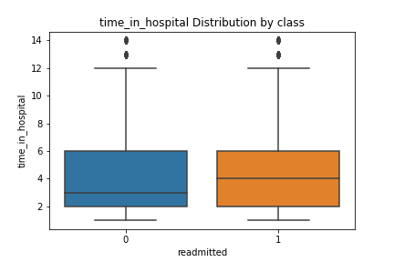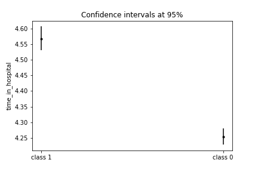
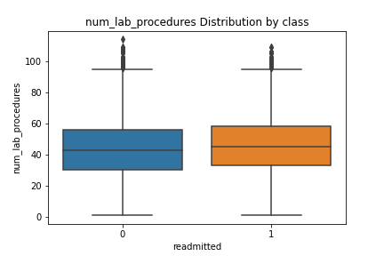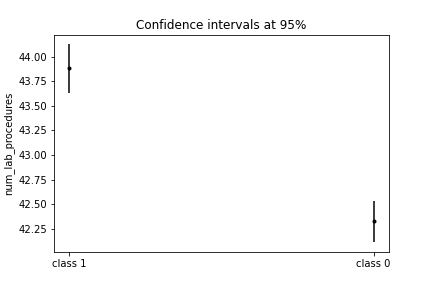
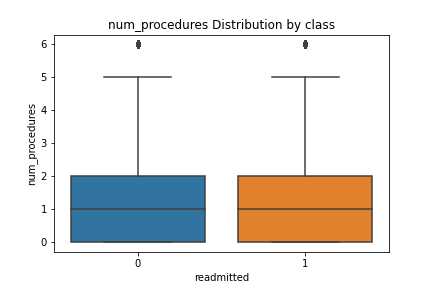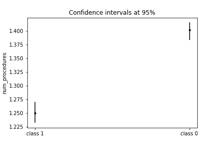
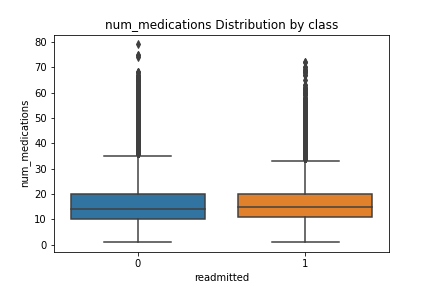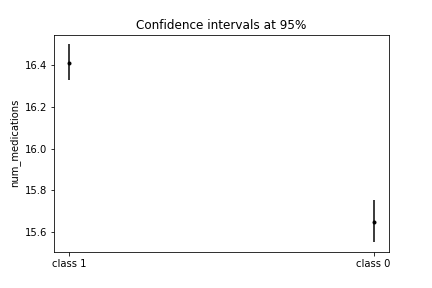
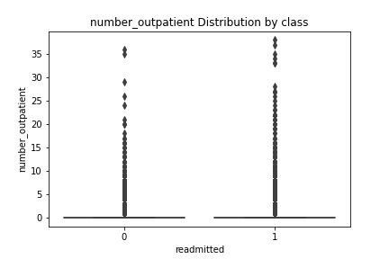
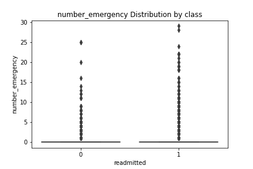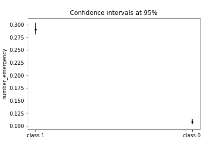
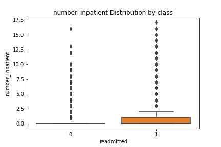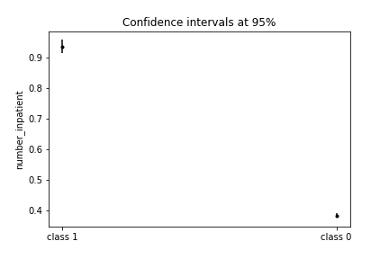
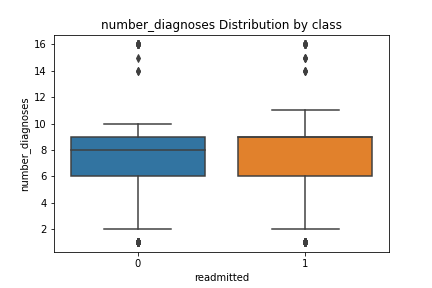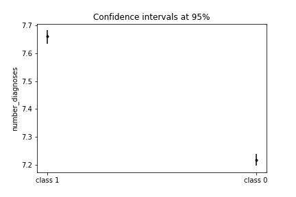
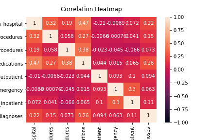
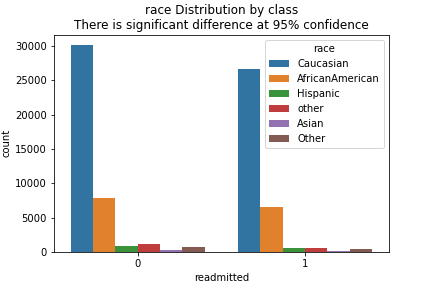
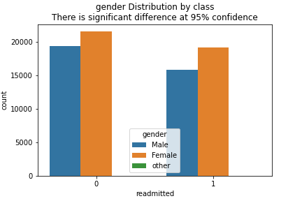
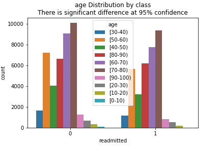
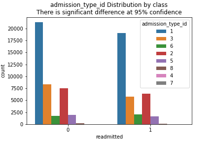
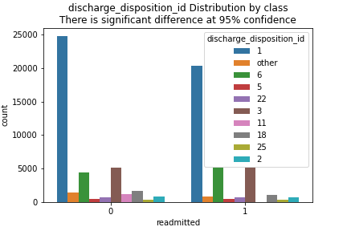
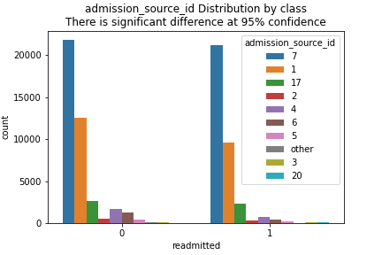
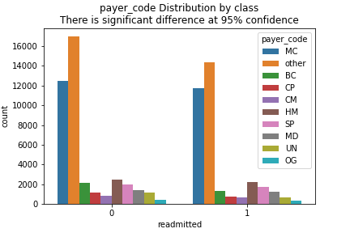
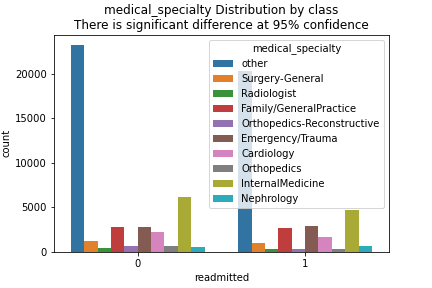
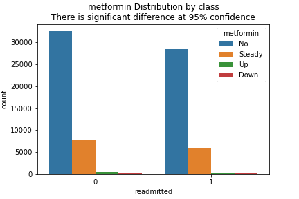
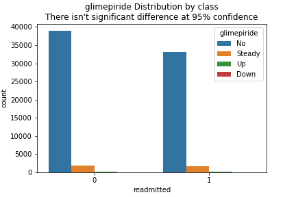
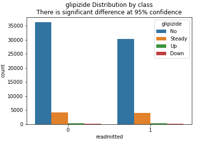
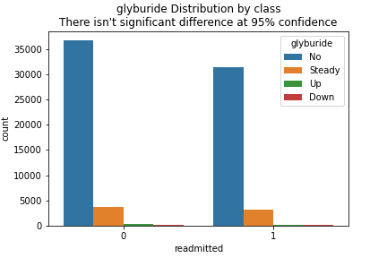
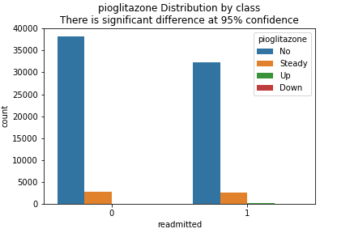
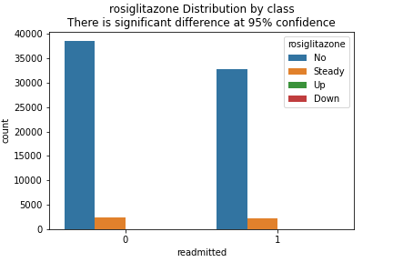
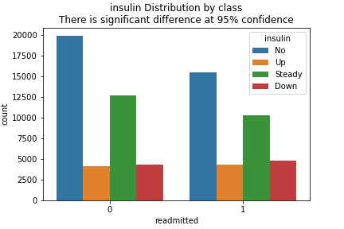
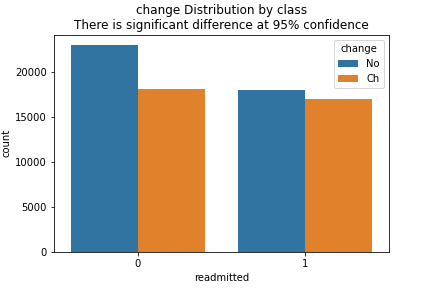
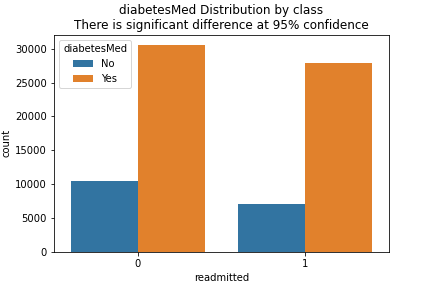